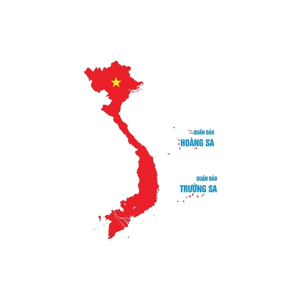

HÀNH TRÌNH XUYÊN VIỆT
Tự do và trải nghiệm là lý do tôi luôn thích dịch chuyển. Mỗi chuyến đi là một lần tôi được F5 bản thân và nhìn quê hương bằng một góc nhìn mới.
Tự do và Trải nghiệm
Bên cạnh những giờ làm việc căng thẳng với dòng code và dữ liệu, tôi dành một tình yêu lớn cho việc dịch chuyển. Với tôi, đi du lịch không chỉ là nghỉ dưỡng, mà là cách để mở rộng thế giới quan, học hỏi về văn hóa và con người ở mỗi vùng đất mới. Mỗi chuyến đi là một lần tôi được "F5" bản thân, tìm thấy những góc nhìn mới mà sách vở hay màn hình máy tính không thể mang lại.
Mục tiêu lớn
Đất nước Việt Nam mình vô cùng xinh đẹp và ẩn chứa nhiều điều kỳ diệu từ vùng núi phía Bắc hùng vĩ đến dải miền Trung đầy nắng gió và miền Tây sông nước hữu tình.
Tôi đã tự đặt ra cho mình một cột mốc quan trọng: Đi hết dải đất hình chữ S này trước khi chạm ngưỡng 30 tuổi.
Những điểm đến tiếp theo
Tại sao là trước 30? Vì đây là khoảng thời gian tôi thấy mình sung sức nhất, khao khát khám phá nhất và cũng là lúc tôi muốn gom nhặt thật nhiều kỷ niệm về quê hương mình.
Danh sách những nơi cần đến vẫn còn dài, nhưng mỗi năm, tôi đều cố gắng thực hiện ít nhất 2-3 chuyến đi lớn để dần hoàn thiện bản đồ của riêng mình.
Tình yêu quê hương
Càng đi, tôi càng thêm yêu và tự hào về vẻ đẹp của Việt Nam.
Dấu ấn từng vùng
Mỗi tỉnh thành đi qua đều để lại trong tôi một dấu ấn riêng biệt về sự tử tế của con người và sự kỳ vĩ của thiên nhiên.
"Đi là để trở về, và trở về để làm việc tốt hơn."